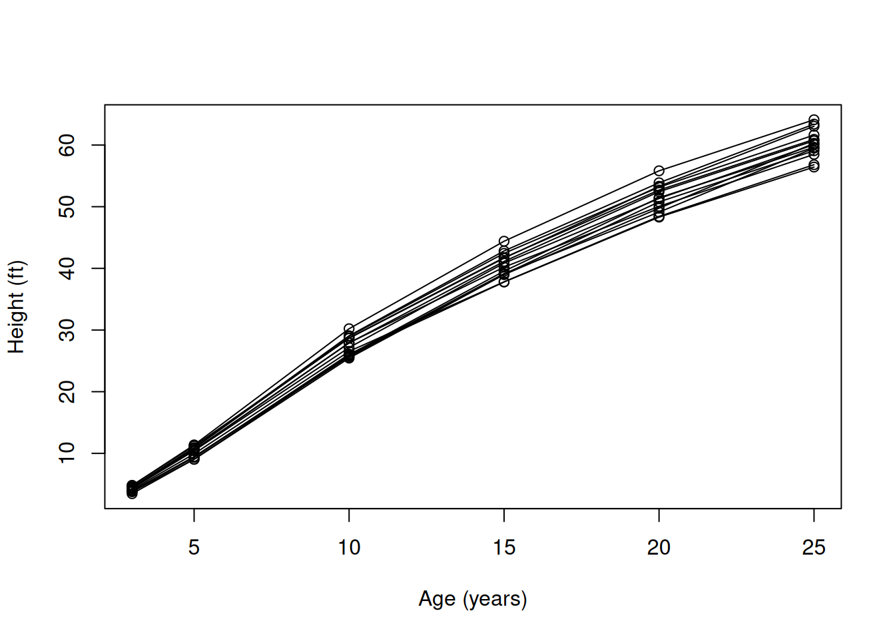
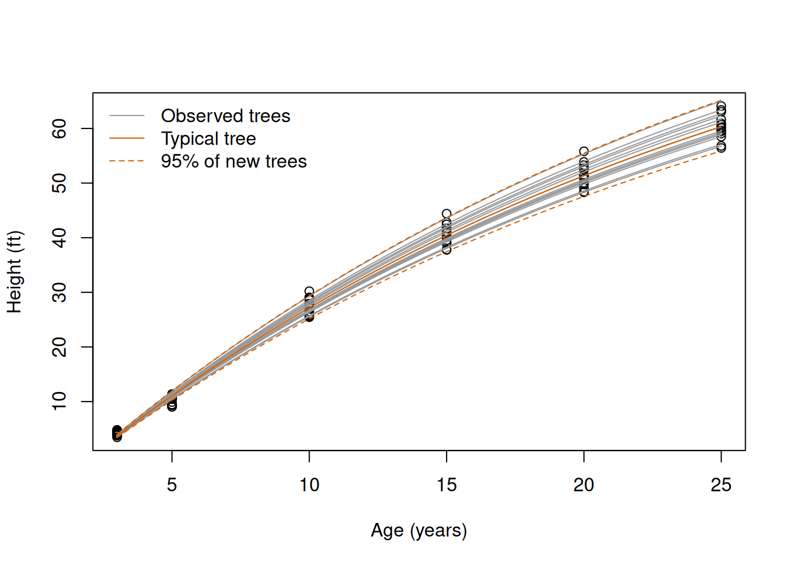
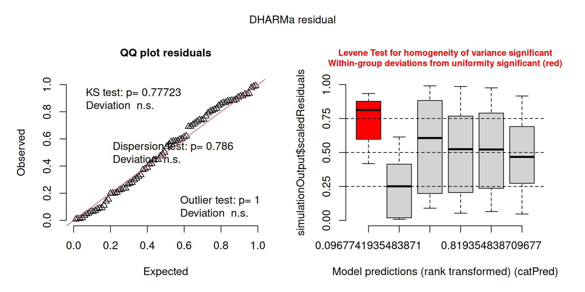
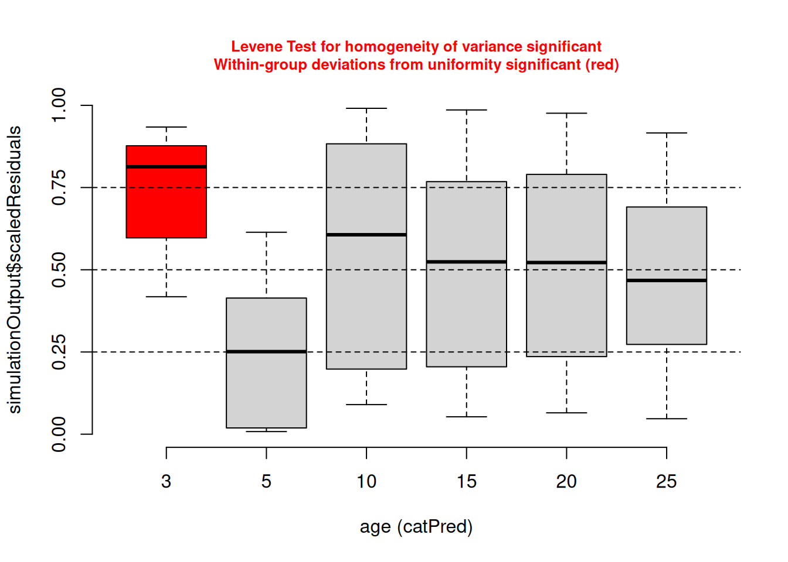

# Load RTMB first and RTMBdist second.
library(RTMB)
library(RTMBdist)Chapter 7: Grouped ecological response curves
The exercises fit models with random effects to four data sets in which the observations come in groups: repeated measurements of the height of pine trees (Exercise 1), tanks of tadpoles (Exercise 2), visits to the nests of barn owls (Exercise 3) and visits to stream sites where salamanders were counted (Exercise 4). Three of these data sets were used in earlier chapters, where the observations were treated as independent; here a grouped model describes the groups. Exercise 5 simulates hypothetical samples to compare the estimates of a variance among groups by maximum likelihood and by REML. Exercises 1 to 4 are the core of the practical and Exercise 5 is extra practice. Work through the first exercise, which is worked in full on this page, before trying the remaining ones. The ideas and notation are introduced in the Chapter 7 theory, and the hints of each question point to the section that you need. Work through the exercises in one R session: later exercises reuse the helper cmb() and the object n_sim of Exercise 1.
As in the theory, every model is written and fitted with the packages RTMB and RTMBdist, which you installed in the Chapter 1 practical together with emdbook and glmmTMB, where the data of Exercises 2 to 4 are. The scaled quantile residuals are calculated with the package DHARMa, which you installed for the Chapter 6 practical. Load RTMB first and RTMBdist second:
1 Exercise 1: Growth of loblolly pines
The data set Loblolly of base R contains the heights of 14 loblolly pines (Pinus taeda), each measured at the ages of 3, 5, 10, 15, 20 and 25 years, 84 measurements in total (Kung 1986, in Pinheiro and Bates 2000). The heights are in feet, as they were recorded. The column Seed names the seed source of each tree, and each source is represented by one tree, so it identifies the tree. As CO2 in the theory, Loblolly is stored as a special kind of data frame for grouped data, and Seed is an ordered factor whose levels are not in the order of the rows. We turn the data into an ordinary data frame and build the index of the trees ourselves, numbering them in the order in which they first appear:
# Loblolly pines (see ?Loblolly), as an ordinary data frame.
data(Loblolly, package = "datasets")
pines = as.data.frame(Loblolly)
# Names of the trees in the order of the rows, and the index (1 to 14) of the tree of
# each measurement.
tree_names = unique(as.character(pines$Seed))
tree = match(as.character(pines$Seed), tree_names)
# List of data: the age (years), the height (ft) and the tree of each measurement.
pine_data = list(age = pines$age, height = pines$height, tree = tree)We describe the growth of a tree with the saturating exponential shifted along the time axis, the curve of the theory written with the symbols of a growth curve:
\[ h(t)=A\left(1-e^{-k(t-t_0)}\right), \]
where \(h(t)\) is the expected height at the age \(t\), \(A\) is the asymptote, \(k\) is the rate at which the curve approaches it, and \(t_0\) is the age at which the curve crosses zero height. In the mixed model of question 3 the asymptote varies among trees, as the asymptote of the plants did in the theory.
- What is the observational unit, and what is the group? Give the units of \(A\), \(k\) and \(t_0\). Plot the heights against age, with a line that joins the measurements of each tree.
- Fit the model with one curve for all the trees (complete pooling) and a Normal observation model with a constant standard deviation \(\sigma_{\mathrm{obs}}\). Read the starting values from the plot, check the convergence and report the estimates with their units.
- Fit the model with a random asymptote, \(A_j=A\,e^{u_j}\) with \(u_j\sim\operatorname{Normal}(0,\sigma^2_{\mathrm{tree}})\), with
random = "u". Check the convergence and report the variance components with their scales and units, with a likelihood profile interval for \(\sigma_{\mathrm{tree}}\). At the age of 25 years, which is larger: the variation among trees or the variation of the measurements around the curve of their tree? - Calculate the predicted tree effects with their standard errors. Draw the curves of the 14 trees, the typical curve and the range that contains the curves of 95% of new trees over the data. Compare the asymptote with the tallest tree in the data: what does the asymptote describe?
- Simulate 1,000 hypothetical samples from the mixed model, and calculate the scaled quantile residuals of the measurements and of the trees with DHARMa. Plot the residuals of the measurements against age. What do the two kinds of residuals show?
- Compare complete pooling and the mixed model with AIC. Why is this comparison only an approximate guide, and why do we not use AICc or BIC?
1.1 Solution
1.1.1 Question 1
The observational unit is one measurement of the height of one tree at one age, and the group is the tree: the six measurements of a tree share its genotype and its growing conditions, so they tend to resemble each other more than measurements of different trees. The data have 14 trees with six measurements each. The asymptote \(A\) is a height, so it is in feet. The rate \(k\) multiplies an age in the exponent, which has no units, so \(k\) is in 1/year, and \(t_0\) is an age in years. We plot the measurements and join those of each tree with a line in a for loop over the trees:
# Measurements, then one line for each tree.
plot(height ~ age, data = pine_data, xlab = "Age (years)", ylab = "Height (ft)")
for (j in seq_along(tree_names)) {
in_tree = pine_data$tree == j
lines(pine_data$age[in_tree], pine_data$height[in_tree])
}
The trees grow almost in parallel (Figure 1). Their growth slows down with age, but none of them has stopped growing at 25 years, when the tallest tree measures 64.1 ft. The differences among trees are small at 3 years and grow with age, which is what a tree with a higher asymptote does under the curve above: its curve is the typical curve multiplied by a factor.
1.1.2 Question 2
Let \(H_{ij}\) be the height of tree \(j\) at its \(i\)-th measurement, at the age \(t_{ij}\). With complete pooling all the trees share one curve, and the heights vary around it with a Normal distribution:
\[ H_{ij}\sim\operatorname{Normal}\left(h(t_{ij}),\,\sigma^2_{\mathrm{obs}}\right), \qquad h(t)=A\left(1-e^{-k(t-t_0)}\right), \]
where \(\sigma_{\mathrm{obs}}\) is the standard deviation of the heights around the curve, in feet (\(\sigma^2_{\mathrm{obs}}\) is the variance of the model). The asymptote, the rate and the standard deviation are positive, so we optimise their logarithms, and \(t_0\) is not transformed:
# Negative log-likelihood with one growth curve for all the trees (complete pooling).
pooled_nll = function(parms, data) {
getAll(parms, data)
A = exp(log_A)
k = exp(log_k)
sd_obs = exp(log_sd_obs)
# Expected height at the age of each measurement.
mu = A * (1 - exp(-k * (age - t0)))
-sum(dnorm(x = height, mean = mu, sd = sd_obs, log = TRUE))
}We read the starting values from Figure 1. The trees are still growing at 60 ft, so we take an asymptote of 80 ft. The heights would reach zero shortly before the age of 3 years, so \(t_0=2\) years. A curve of this kind reaches 63% of its asymptote, here about 50 ft, at the age \(t_0+1/k\); the trees reach 50 ft at about 20 years, so \(1/k\approx20\) years and \(k=0.05\)/year. For the standard deviation we take 2 ft:
# Connect a likelihood to a data set.
cmb = function(f, d) function(p) f(p, d)
# Starting values read from the plot.
pine_start = list(log_A = log(80), log_k = log(0.05), t0 = 2, log_sd_obs = log(2))
# Process the NLL, minimise it with BFGS and check the convergence code.
pooled_obj = MakeADFun(cmb(pooled_nll, pine_data), pine_start, silent = TRUE)
pooled_fit = optim(
par = pooled_obj$par,
fn = pooled_obj$fn,
gr = pooled_obj$gr,
method = "BFGS"
)
pooled_fit$convergence[1] 0# Estimates on the original scale: A and sd_obs in ft, k in 1/year, t0 in years.
c(
A = exp(pooled_fit$par[["log_A"]]),
k = exp(pooled_fit$par[["log_k"]]),
t0 = pooled_fit$par[["t0"]],
sd_obs = exp(pooled_fit$par[["log_sd_obs"]])
) A k t0 sd_obs
102.26211027 0.03892454 2.05895634 1.68095025 The fit converged, with an asymptote of 102 ft, a rate of 0.039/year and \(t_0=2.06\) years. The heights vary around the common curve with a standard deviation of 1.68 ft, which includes the differences among trees.
1.1.3 Question 3
The mixed model has two levels, as the model of the theory:
\[ u_j\sim\operatorname{Normal}\left(0,\sigma^2_{\mathrm{tree}}\right), \qquad H_{ij}\mid u_j\sim\operatorname{Normal}\left(h_j(t_{ij}),\,\sigma^2_{\mathrm{obs}}\right), \qquad h_j(t)=A\,e^{u_j}\left(1-e^{-k(t-t_0)}\right), \]
where \(u_j\) is the deviation of tree \(j\) on the log scale of the asymptote and \(\sigma^2_{\mathrm{tree}}\) is the variance of these deviations among trees. The joint NLL adds minus the log density of the deviations, before they are used, to minus the log density of the heights for given deviations. Question 5 simulates from this model, so we mark the heights with OBS() now:
# Joint negative log-likelihood with a random asymptote. The heights are marked as
# observations for the simulations of question 5.
mixed_nll = function(parms, data) {
getAll(parms, data)
height = OBS(height)
sd_tree = exp(log_sd_tree)
# Minus the log density of the deviations of the trees, before they are used.
nll = -sum(dnorm(x = u, mean = 0, sd = sd_tree, log = TRUE))
# Asymptote of each tree, and minus the log density of the heights for given u.
A = exp(log_A + u)
k = exp(log_k)
sd_obs = exp(log_sd_obs)
mu = A[tree] * (1 - exp(-k * (age - t0)))
nll - sum(dnorm(x = height, mean = mu, sd = sd_obs, log = TRUE))
}The list of parameters adds log_sd_tree, which starts at \(\log(0.1)\) (trees whose asymptotes differ by about 10%), and one deviation per tree, which start at zero. With random = "u", MakeADFun() integrates the deviations out of the likelihood, and optim() minimises the marginal NLL over the other five parameters:
# Process the joint NLL; random = "u" integrates the deviations of the trees out.
mixed_obj = MakeADFun(
cmb(mixed_nll, pine_data),
c(pine_start, list(log_sd_tree = log(0.1), u = rep(0, 14))),
random = "u",
silent = TRUE
)
mixed_fit = optim(
par = mixed_obj$par,
fn = mixed_obj$fn,
gr = mixed_obj$gr,
method = "BFGS"
)
mixed_fit$convergence[1] 0# Standard errors on the optimised scales.
mixed_sd = sdreport(mixed_obj)
summary(mixed_sd, select = "fixed") Estimate Std. Error
log_A 4.6252117 0.02501142
log_k -3.2439427 0.03491620
t0 2.0581649 0.05093953
log_sd_obs -0.3006573 0.08450276
log_sd_tree -3.2374592 0.19658686# Estimates on the original scale.
A_mle = exp(mixed_fit$par[["log_A"]])
k_mle = exp(mixed_fit$par[["log_k"]])
t0_mle = mixed_fit$par[["t0"]]
sd_tree_mle = exp(mixed_fit$par[["log_sd_tree"]])
sd_obs_mle = exp(mixed_fit$par[["log_sd_obs"]])
c(A = A_mle, k = k_mle, t0 = t0_mle, sd_tree = sd_tree_mle, sd_obs = sd_obs_mle) A k t0 sd_tree sd_obs
102.02436795 0.03900979 2.05816486 0.03926353 0.74033142 The fit converged. The curve hardly changes compared with complete pooling, but the variation is now split into two components. \(\hat\sigma_{\mathrm{obs}}\approx0.74\) ft is the standard deviation of the measurements around the curve of their own tree, less than half of the 1.68 ft of complete pooling, which counted the differences among trees as variation of the measurements. \(\hat\sigma_{\mathrm{tree}}\approx0.039\) is a standard deviation on the log scale of the asymptote, so it has no units: the asymptotes of the trees differ from the median asymptote by roughly 4%. As in the theory, we calculate its interval from the likelihood profile of its logarithm and transform the endpoints back:
# Profile of log(sd_tree), and the 95% interval of sd_tree.
mixed_profile_sd = TMB::tmbprofile(mixed_obj, name = "log_sd_tree", trace = FALSE)
exp(confint(mixed_profile_sd)) lower upper
log_sd_tree 0.02769282 0.06057868The trees differ by between about 3% and 6% in their asymptotes. Because the deviation of a tree multiplies its whole curve, the standard deviation of the typical height among trees at a given age is roughly \(\sigma_{\mathrm{tree}}\) times the typical height at that age. At 25 years the typical height is:
# Growth curve: asymptote A, rate k and age t0 at which the height is zero.
growth = function(t, A = 1, k = 1, t0 = 0) {
A * (1 - exp(-k * (t - t0)))
}
# Typical height at 25 years (ft), and roughly the standard deviation among trees.
height_25 = growth(25, A = A_mle, k = k_mle, t0 = t0_mle)
c(typical = height_25, sd_among_trees = sd_tree_mle * height_25) typical sd_among_trees
60.33461 2.36895 At 25 years the typical height of the trees varies by about 2.4 ft among trees, three times the 0.74 ft by which the measurements vary around the curve of their tree. At 3 years, with a typical height of less than 4 ft, the differences among trees are much smaller than the variation of the measurements. So which source of variation dominates depends on the age.
1.1.4 Question 4
summary() of the result of sdreport() with select = "random" returns the predicted deviation of each tree with its standard error:
# Predicted tree effects (log scale of the asymptote) and their standard errors.
tree_effects = summary(mixed_sd, select = "random")
rownames(tree_effects) = tree_names
round(tree_effects, 3) Estimate Std. Error
301 0.022 0.013
303 0.050 0.013
305 0.075 0.013
307 -0.024 0.013
309 0.039 0.013
311 -0.013 0.013
315 -0.001 0.013
319 0.013 0.013
321 -0.024 0.013
323 0.032 0.013
325 -0.019 0.013
327 -0.056 0.013
329 -0.061 0.013
331 -0.031 0.013The predicted effects range from \(-0.061\) (tree 329) to \(0.075\) (tree 305), so the asymptotes of the trees lie between about 6% below and 8% above the median, with a standard error of 0.013 for every tree (all the trees have the same six ages). The curve of an observed tree uses its predicted asymptote \(\hat A\,e^{\hat u_j}\); the typical curve has \(u_j=0\); and 95% of new trees have asymptotes between \(\hat A\,e^{-1.96\,\hat\sigma_{\mathrm{tree}}}\) and \(\hat A\,e^{1.96\,\hat\sigma_{\mathrm{tree}}}\) (Figure 2):
# Predicted asymptote of each tree, and the range of the asymptotes of 95% of new trees
# (ft).
tree_asym = A_mle * exp(tree_effects[, "Estimate"])
new_tree_asym = A_mle * exp(qnorm(p = c(0.025, 0.975)) * sd_tree_mle)
new_tree_asym[1] 94.46757 110.18566# Measurements, the curves of the 14 trees, the typical curve and the range of new trees.
plot(height ~ age, data = pine_data, xlab = "Age (years)", ylab = "Height (ft)")
for (j in seq_along(tree_asym)) {
curve(growth(x, A = tree_asym[j], k = k_mle, t0 = t0_mle), add = TRUE, col = "grey60")
}
curve(growth(x, A = A_mle, k = k_mle, t0 = t0_mle), add = TRUE, col = "#D55E00")
curve(growth(x, A = new_tree_asym[1], k = k_mle, t0 = t0_mle), add = TRUE,
col = "#D55E00", lty = 2)
curve(growth(x, A = new_tree_asym[2], k = k_mle, t0 = t0_mle), add = TRUE,
col = "#D55E00", lty = 2)
legend("topleft", legend = c("Observed trees", "Typical tree", "95% of new trees"),
col = c("grey60", "#D55E00", "#D55E00"), lty = c(1, 1, 2), bty = "n")
The asymptotes of 95% of new trees lie between 94 and 110 ft, so at 25 years their heights lie between about 56 and 65 ft, and the curves of the 14 trees fill this range. The range describes the variation among trees at the estimates and leaves out the uncertainty of the estimates themselves.
The estimated asymptote, 102 ft, lies far above the tallest tree in the data, 64.1 ft. The curve reaches 63% of its asymptote at the age of \(\hat t_0+1/\hat k\):
# Age at which the typical curve reaches 63% of its asymptote (years).
t0_mle + 1 / k_mle[1] 27.69276This is about 28 years, after the last measurement at 25 years. So the measurements cover only the part of the curve in which the trees grow fast, and the asymptote is an extrapolation: it is the height that the trees would approach if they kept growing as the saturating exponential says. Its standard error on the log scale, 0.025, measures its uncertainty only under this assumption, which the data cannot check. The asymptote is therefore better read as a parameter of the curve than as a prediction of the final height of a pine.
1.1.5 Question 5
The heights are marked with OBS(), so simulate() of the fitted object draws new deviations for the 14 trees and then new heights for these deviations (unconditional simulation). We keep 1,000 hypothetical samples in a matrix with one row per measurement:
# 1,000 hypothetical samples: new tree deviations, then new heights for them.
n_sim = 1000
mixed_simulations = matrix(NA, nrow = length(pine_data$height), ncol = n_sim)
set.seed(seed = 711)
for (j in seq_len(n_sim)) {
mixed_simulations[, j] = mixed_obj$simulate(mixed_fit$par)$height
}The expected height of a measurement before the deviation of its tree is known is the typical curve at its age, so that is the fittedPredictedResponse of DHARMa. plot() draws the two standard panels and DHARMa::plotResiduals() the residuals against age, which has only six values, so DHARMa draws a box for each age (rank = FALSE labels the boxes with the ages):
# Expected height of each measurement on the typical curve (u = 0).
mixed_expected = growth(pine_data$age, A = A_mle, k = k_mle, t0 = t0_mle)
# Scaled quantile residuals and the two standard panels.
mixed_residuals = DHARMa::createDHARMa(
simulatedResponse = mixed_simulations,
observedResponse = pine_data$height,
fittedPredictedResponse = mixed_expected
)
plot(mixed_residuals)
# Residuals against the age of the measurement.
DHARMa::plotResiduals(mixed_residuals, form = pine_data$age, rank = FALSE)
The quantile–quantile plot follows the line, so the residuals as a whole are close to uniform. Against age they show a pattern (Figure 4): at 3 years most residuals lie above 0.5, with a median of about 0.8, and at 5 years most lie below it, with a median of about 0.25. So the heights lie above the curve at 3 years and below it at 5 years. To see why, we calculate the mean height at each age with tapply(), which applies a function (here mean()) to the values of its first argument within each group given by its second argument, and from it the mean growth rate in the first two intervals:
# Mean height at each of the six ages (ft).
mean_height = tapply(pine_data$height, pine_data$age, mean)
mean_height 3 5 10 15 20 25
4.237857 10.205000 27.442143 40.543571 51.468571 60.289286 # Mean growth rate between 3 and 5 years and between 5 and 10 years (ft/year).
c((mean_height[["5"]] - mean_height[["3"]]) / 2, (mean_height[["10"]] - mean_height[["5"]]) / 5)[1] 2.983571 3.447429The mean heights grow by 3.0 ft/year between 3 and 5 years and by 3.4 ft/year between 5 and 10 years, so the young pines first accelerate their growth before it slows down, an S-shaped start that the saturating exponential cannot follow, because its slope is largest at \(t_0\). DHARMa also flags that the spread of the residuals differs among the ages: at 3 years the heights vary less around the curves than \(\hat\sigma_{\mathrm{obs}}\) allows, whereas the model has one \(\sigma_{\mathrm{obs}}\) for all ages. As in the theory, we read the plots as exploratory evidence and not the tests that DHARMa prints with them. Both points concern the youngest trees; a curve with an inflection, such as the logistic or the Gompertz function, could be fitted and compared with this one.
The residuals of the trees come from the sums of the six heights of each tree:
# One residual per tree, from the sums of its six measurements.
tree_residuals = DHARMa::recalculateResiduals(mixed_residuals, group = pine_data$tree)
tree_scaled = residuals(tree_residuals)
names(tree_scaled) = tree_names
round(tree_scaled, 3) 301 303 305 307 309 311 315 319 321 323 325 327 329
0.748 0.902 0.979 0.206 0.850 0.308 0.508 0.700 0.203 0.810 0.385 0.082 0.043
331
0.163 They are spread between 0.04 (tree 329) and 0.98 (tree 305), with no tree far outside its simulations; with 14 trees this is what we expect if the distribution of tree effects describes the trees. The residuals of the trees cannot show the problem at young ages, because each of them adds up the heights of all ages of a tree; the residuals of the measurements show it. This is the point of the warning in the theory: each level of residuals can hide what the other one shows.
1.1.6 Question 6
Complete pooling has \(K=4\) parameters (\(A\), \(k\), \(t_0\), \(\sigma_{\mathrm{obs}}\)), and the mixed model \(K=5\), because the 14 deviations of the trees are integrated out and cost one parameter, \(\sigma_{\mathrm{tree}}\). Both are fitted to the same 84 heights in the same units, and the minimum of each NLL is minus its maximum log-likelihood (the marginal one for the mixed model):
# AIC of the two models: K = 4 and K = 5 estimated parameters.
K_pines = c(pooled = length(pooled_fit$par), mixed = length(mixed_fit$par))
nll_pines = c(pooled = pooled_fit$value, mixed = mixed_fit$value)
2 * K_pines + 2 * nll_pines pooled mixed
333.6340 243.3372 The mixed model has an AIC about 90 units lower. Complete pooling is the mixed model with \(\sigma_{\mathrm{tree}}=0\), which lies at the boundary of the range of the parameter, where the large-sample theory behind AIC does not hold, so the comparison is only an approximate guide. A difference of 90 units leaves no doubt here, but for a smaller difference leave-one-tree-out cross-validation, as in the theory, would be the better guide. AICc and BIC need the number of independent observations, which is ambiguous for grouped data: the 84 heights are not independent, but they are not only 14 observations either, because each height adds information about the curve of its tree.
2 Exercise 2: Survival of tadpoles in tanks
The data set ReedfrogPred in the package emdbook contains the results of laboratory experiments on the predation of tadpoles of the African reed frog Hyperolius spinigularis (Vonesh and Bolker 2005). Each of the 48 rows is a tank: density is the number of tadpoles placed in the tank at the start (10, 25 or 35), pred says whether predators were present (pred) or not (no), size is the size of the tadpoles (small or big), and surv is the number of tadpoles that survived. Load the data with data(ReedfrogPred, package = "emdbook").
In Exercise 1 of the Chapter 4 practical we fitted Binomial models with one probability of survival for all the tadpoles of a treatment, which treat the tadpoles of all the tanks as independent, and found that the numbers of survivors vary among tanks much more than a Binomial model allows. In Chapter 6 we described this kind of variation with a Beta-Binomial distribution. Here we use all 48 tanks with a model in which the probability of survival depends on the presence of predators and varies among tanks. Let \(X_i\) be the number of survivors in tank \(i\), which started with \(n_i\) tadpoles, and \(P_i\) be 1 if the tank had predators and 0 otherwise:
\[ u_i\sim\operatorname{Normal}\left(0,\sigma^2_{\mathrm{tank}}\right), \qquad X_i\mid u_i\sim\operatorname{Binomial}\left(n_i,\,p_i\right), \qquad \operatorname{logit}(p_i)=\beta_0+\beta_{\mathrm{pred}}P_i+u_i, \]
where \(u_i\) is the deviation of tank \(i\) on the logit scale and \(\sigma^2_{\mathrm{tank}}\) is the variance of these deviations among tanks.
- On paper, write the marginal probability of the number of survivors of one tank as an integral over its deviation. Each tank is observed once: what does the random effect describe, and how does this model differ from a Beta-Binomial model with the same effect of predators? Hint: start from the Binomial probability of \(X_i\) for a given \(u_i\) and average it over the distribution of \(u_i\) (“The marginal likelihood” in Maximum marginal likelihood). A tank holds \(n_i\) tadpoles, and the Beta-Binomial distribution is a marginal distribution of the same kind (Conditional and marginal distributions): compare the distribution that each model gives to the probabilities of the tanks, and how its integral is calculated.
- Fit two models to the 48 tanks and check the convergence of both: the model above, with
random = "u", and a Beta-Binomial model without tank deviations, with the precision \(\kappa\) of Chapter 6, whose mean probability of survival \(p_i\) has the same linear predictor, \(\operatorname{logit}(p_i)=\beta_0+\beta_{\mathrm{pred}}P_i\). In both models, build the linear predictor from the model matrix of~ pred. Report the estimates of \(\beta_0\), \(\beta_{\mathrm{pred}}\), \(\sigma_{\mathrm{tank}}\) and \(\kappa\). Hint: the list of data holds the survivors, the initial numbers and the model matrixX_p = model.matrix(~ pred, data = ReedfrogPred). Check its columns:nois the first level ofpred, so it is the reference, and the second column is \(P_i\). In the NLL,X_p %*% beta_pis then \(\beta_0+\beta_{\mathrm{pred}}P_i\) for every tank (The model matrix). There is one tank per row, souhas 48 elements and needs no index vector. The mixed model follows Random effects in RTMB, withplogis()for the probability. The Beta-Binomial model follows A model for overdispersed proportions in Chapter 6:dbetabinom()of RTMBdist takes the shape parameters \(\kappa p_i\) and \(\kappa(1-p_i)\). Logits of zero (a probability of 0.5) are good starting values for both elements ofbeta_pin both models. - Compare the two models with AIC. The theory calls a comparison between models with and without random effects only an approximate guide: why does that reason not apply here? Hint: what do the two likelihoods describe, and is one model a special case of the other at the boundary of a parameter (Comparing grouped models)?
- Calculate the probability of survival of a typical tank (\(u_i=0\)) with and without predators. Then set seed 721, simulate one million tank deviations from their estimated distribution, and calculate the mean probability of survival over tanks with and without predators. Why do the typical and the mean probability differ without predators and hardly with them? Compare both with the mean probabilities of the Beta-Binomial model. Hint: proceed as in the practice “sapling growth in forest stands” in Curves for observed and new plants, with
plogis()in place ofexp(); \(\beta_0\) and \(\beta_{\mathrm{pred}}\) are the elements ofparnamedbeta_p, in the order of the columns of the model matrix. For the difference, look at the shape of the inverse logit near each typical probability (the box on Jensen’s inequality in Chapter 4). - Calculate the predicted tank effects, plot them against the initial density with the code below the questions, and calculate the mean predicted effect of each of the four combinations of predators and size of the tadpoles. Does a property of the tanks seem to explain part of the variation among them? Hint: the predicted effects are the rows of
summary()withselect = "random"(“Variance components and predicted plant effects” in Maximum marginal likelihood).tapply()(Exercise 1, question 5) calculates the means, withlist(ReedfrogPred$size, ReedfrogPred$pred)as its second argument.
The code below draws the plot of question 5. It needs the predicted tank effects, the result of summary() with select = "random", in an object called tank_effects; if you gave it another name, change it in the code. paste() joins the level of predators and the size of each tank into one name, such as "pred small", and match() gives the position of that name in combination_names, a number from 1 to 4 that selects the symbol and the shift of each tank. Each density has 16 tanks, so the shift keeps the symbols of the four combinations apart along the axis of density.
# Combination of predators and size of each tank, its symbol and a small shift along x.
combination = paste(ReedfrogPred$pred, ReedfrogPred$size)
combination_names = c("no small", "no big", "pred small", "pred big")
combination_number = match(combination, combination_names)
shift = c(-1.2, -0.4, 0.4, 1.2)
symbols = c(1, 2, 16, 17)
# Predicted effects against the shifted densities; ylim leaves room for the legend above
# the points.
plot(ReedfrogPred$density + shift[combination_number], tank_effects[, "Estimate"],
pch = symbols[combination_number], ylim = c(-1.6, 2.4),
xlab = "Initial density (tadpoles per tank)", ylab = "Predicted tank effect (logit)")
abline(h = 0, lty = 2)
legend("top", legend = c("No predators, small", "No predators, big",
"Predators, small", "Predators, big"),
pch = symbols, ncol = 2, bty = "n")3 Exercise 3: Begging calls at owl nests
The data set Owls in the package glmmTMB contains 599 visits of a parent to 27 nests of barn owls, with between 4 and 52 visits per nest (Roulin and Bersier 2007). For each visit, SiblingNegotiation is the number of calls made by the nestlings, FoodTreatment says whether the nestlings had been fed (Satiated) or deprived of food (Deprived), ArrivalTime is the time at which the parent arrived, in hours (values above 24 are after midnight, so 25.5 is half past one in the morning), and Nest names the nest. Load the data with data(Owls, package = "glmmTMB").
The Chapter 3 practical and Chapter 4 used only the visits of the female parent to satiated broods, and treated them as i.i.d., although visits to the same nest may resemble each other. Here we use all 599 visits and describe the nests. Let \(X_{ij}\) be the number of calls at visit \(i\) to nest \(j\), \(S_{ij}\) be 1 if the brood was satiated and 0 if it was deprived, and \(t_{ij}\) be the time of arrival. We use a Negative Binomial model with mean \(\mu_{ij}\) and shape \(k\) for a given nest deviation,
\[ u_j\sim\operatorname{Normal}\left(0,\sigma^2_{\mathrm{nest}}\right), \qquad X_{ij}\mid u_j\sim\operatorname{NegBin}\left(\mu_{ij},k\right), \qquad \log(\mu_{ij})=\log(\mu_0)+\beta_{\mathrm{sat}}S_{ij}+\beta_{\mathrm{time}}\left(t_{ij}-24\right)+u_j, \]
where \(\mu_0\) is the expected number of calls at a visit at midnight to a deprived brood in a typical nest. Nests also differ in the number of nestlings (BroodSize), which we do not model; the nest deviations include its effect.
- What is the observational unit, and what is the group? Which of the food treatment, the time of arrival and the number of nestlings are measured on the visits and which on the nests? Count the visits per nest, and plot the number of calls against the time of arrival, with a different symbol for each food treatment. Hint: see Observations in groups and the definition of a group-level predictor in Group-level predictors and shrinkage.
table()of the index of the nests counts the visits, andtable()of the index andFoodTreatmentshows whether the food treatment changes within a nest. The levels ofNestare the names of the nests in alphabetical order, soas.numeric(Owls$Nest)gives an index from 1 to 27 whose names arelevels(Owls$Nest);match()as in Exercise 1 works as well. For the symbols, usepch = ifelse(...)as in Exercise 2 of the Chapter 6 practical. - Fit the model without nest deviations (with \(u_j=0\) for all nests) and the model with them, with
dnbinom2()of RTMBdist and the model matrix of~ FoodTreatment + time, wheretimeis a new column of the data frame with the time of arrival minus 24 (hours from midnight), and check the convergence. For the model with nest deviations, report the effects of food and of one hour of time as factors by which they multiply the expected number of calls, with 95% Wald intervals. How do these factors and the shape \(k\) change when the nest deviations are left out? Compare the two models with AIC. What does \(\hat\sigma_{\mathrm{nest}}\) say about the nests? At midnight, between which values lies the expected number of calls of a deprived brood in 95% of new nests? Hint: both predictors are measured on the visits, so the model matrixX_muis built from the whole data frame and has one row per visit, not one per nest, andX_mu %*% beta_muis the log mean of each visit without its nest deviation (The model matrix).u[nest]is the deviation of the nest of each visit, asA[tree]was the asymptote of the tree of each measurement in Exercise 1. Calculate the Wald intervals on the log scale and transform the endpoints withexp(), as for the factors of chilling in Group-level predictors and shrinkage, here from the second and third rows ofsummary()withselect = "fixed", which belong to the second and third columns ofX_mu. For \(\hat\sigma_{\mathrm{nest}}\), see “Variance components and predicted plant effects” in Maximum marginal likelihood. A nest deviation multiplies the expected number of calls, so in 95% of new nests it lies between the typical value \(\hat\mu_0\) multiplied by \(e^{-1.96\,\hat\sigma_{\mathrm{nest}}}\) and by \(e^{1.96\,\hat\sigma_{\mathrm{nest}}}\), as the asymptotes of new trees in question 4 of Exercise 1 (see also Curves for observed and new plants). - Fit the model with one log mean \(\log(\mu_{0j})\) for each nest and no distribution of nest values (no pooling), with the same effects of food and time, from the model matrix of
~ 0 + Nest + FoodTreatment + time. Plot, against the number of visits of each nest, its log mean without pooling and its predicted log mean \(\log(\hat\mu_0)+\hat u_j\) under the mixed model, with a line at the typical value \(\log(\hat\mu_0)\). Which nests are pulled most towards the typical value, and why? Hint:0 +removes the intercept, so the model matrix has one column for each nest, followed by the columns of food and time (without an intercept only the first factor,Nest, gets a column for every level, andFoodTreatmentkeeps its reference level): the first form in “Two ways to encode groups” in Group-level predictors and shrinkage. The model has no nest deviations, so the NLL of question 2 for the model without nest deviations fits it unchanged, with this matrix in the list of data (see Three ways to share information for no pooling). The first 27 elements ofparare the log means of the nests, in the order oflevels(Owls$Nest). For the reasons, see Shrinkage.
4 Exercise 4: Salamanders at mined and unmined sites
The data set Salamanders in the package glmmTMB contains counts of salamanders at 23 stream sites, each visited four times (Price et al. 2016). As in Chapter 2, we use the counts of the spring salamander (spp equal to "GP"), 92 counts in total. The column mined says whether the site was affected by mountaintop removal coal mining (yes or no), cover is the amount of cover objects in the stream, standardised across the 23 sites (0 is the average site and one unit is one standard deviation among sites), and site names the site. Both predictors are properties of the sites. Load the data with data(Salamanders, package = "glmmTMB").
Chapter 2 calculated a dispersion ratio for the 48 counts at the 12 unmined sites, and treated the four visits to a site as i.i.d. Here we model all 23 sites with a Poisson model for a given site deviation. Let \(X_{ij}\) be the count at visit \(i\) to site \(j\), \(M_j\) be 1 for a mined site and 0 otherwise, and \(C_j\) be the cover of site \(j\):
\[ u_j\sim\operatorname{Normal}\left(0,\sigma^2_{\mathrm{site}}\right), \qquad X_{ij}\mid u_j\sim\operatorname{Poisson}\left(\lambda_j\right), \qquad \log(\lambda_j)=\log(\lambda_0)+\beta_{\mathrm{mined}}M_j+\beta_{\mathrm{cover}}C_j+u_j. \]
- Calculate the mean count at mined and at unmined sites. Make
nothe reference level ofminedwithrelevel(), so that \(\log(\lambda_0)\) belongs to an unmined site, and fit the Poisson model with the model matrix of~ mined + coverand without site deviations (\(u_j=0\) for all sites). Set seed 741, simulate 1,000 hypothetical samples from the fit and calculate the scaled quantile residuals of the counts with DHARMa. Report the dispersion statistic and the residuals of the sites. What do they show? Hint:model.matrix()takes the first level of a factor as the reference, so look atlevels(spring$mined)before and afterspring$mined = relevel(spring$mined, ref = "no").siteis an ordered factor, so build the index of the sites withmatch(), as for the trees in Exercise 1. The two predictors are properties of the sites, so build the model matrix from a data frame with one row per site, taken from the first count of each site, asplant_infoin The model matrix; in the NLL,lambda[site]is then the mean of each count. For the residuals, mark the counts withOBS()and follow Checking a grouped model, withintegerResponse = TRUEbecause the counts are whole numbers (as in Checking the fitted model in Chapter 6). Without site deviations, the expected value of a count is the mean of its site. How many of the 23 site residuals would you expect below 0.05 or above 0.95 by chance? - Fit the model with site deviations and check the convergence. Report the effects of mining and of one unit of cover as factors by which they multiply the expected count, with 95% Wald intervals, the expected count at a typical unmined site of average cover, and \(\hat\sigma_{\mathrm{site}}\). Compare the two models with AIC. Hint: the NLL of question 1 gains the density of
u, before the line that uses it, and+ uin the log mean of the sites (Random effects in RTMB). The Wald intervals are calculated as in question 2 of Exercise 3, withcritical_valueof that exercise. - Set seed 742 and simulate 1,000 hypothetical samples from the model with site deviations, calculate the scaled quantile residuals of the counts, and report the dispersion statistic and the residuals of the sites. Compare them with those of question 1. Hint: the simulations now draw new site deviations, so the expected value of a count is the typical mean (\(u_j=0\)) of its site (Checking a grouped model).
5 Exercise 5: Variance among groups estimated by ML and REML
This exercise is extra practice. The theory says that maximum likelihood estimates of a variance among groups tend to be too small when fixed effects are estimated from the same data, and that restricted maximum likelihood (REML) reduces this bias. How large the bias is in a particular design can be found by simulating hypothetical samples from a model whose parameters we know. Here the design is a survey of the herb layer of a forest, with the logarithm of the dry biomass (biomass in g/m²) measured in five quadrats at each of six sites, and the model is a Normal model with a random intercept for each site:
\[ u_j\sim\operatorname{Normal}\left(0,\sigma^2_{\mathrm{site}}\right), \qquad Y_{ij}\mid u_j\sim\operatorname{Normal}\left(\mu+u_j,\,\sigma^2_{\mathrm{obs}}\right), \]
where \(Y_{ij}\) is the log biomass in quadrat \(i\) of site \(j\), \(\mu\) is the mean log biomass of a typical site, and \(\sigma^2_{\mathrm{site}}\) and \(\sigma^2_{\mathrm{obs}}\) are the variances among sites and among the quadrats of a site. We simulate with \(\mu=4\) and \(\sigma_{\mathrm{site}}=\sigma_{\mathrm{obs}}=1\), so both variances are 1. The NLL is:
# Joint NLL of a Normal model with a random intercept for each site.
site_nll = function(parms, data) {
getAll(parms, data)
log_biomass = OBS(log_biomass)
# Minus the log density of the deviations of the sites, before they are used.
nll = -sum(dnorm(x = u, mean = 0, sd = exp(log_sd_site), log = TRUE))
nll - sum(dnorm(x = log_biomass, mean = mu + u[site], sd = exp(log_sd_obs), log = TRUE))
}The function that runs the simulation is given below the questions with two gaps, which you fill in.
- Complete the two gaps of the function
simulate_group_variance()below: the fit by maximum likelihood, with the site deviations integrated out, and the fit by REML, with the mean integrated out as well. Set seed 751 and simulate 500 hypothetical samples with six sites. In how many samples did a fit fail (a convergence code other than zero)? Hint: Gap 1 is the fit of Random effects in RTMB, and Gap 2 the fit of Restricted maximum likelihood, where the only fixed effect ismu. The columnconvergedof the result isTRUEwhen both fits of a sample converged. - Calculate the mean of the estimates of \(\sigma^2_{\mathrm{site}}\) and of \(\sigma^2_{\mathrm{obs}}\) by maximum likelihood and by REML, with their Monte Carlo standard errors, and compare them with the variances used to simulate. Which estimator of the variance among sites is closer to being unbiased? Why do the two estimates of \(\sigma^2_{\mathrm{obs}}\) hardly differ? Hint: the Monte Carlo standard error of a mean of 500 values is their standard deviation divided by \(\sqrt{500}\) (Exercise 4 of the Chapter 6 practical). For the last question, ask which observations inform each variance and which of them the estimate of \(\mu\) uses up (Restricted maximum likelihood).
- How many estimates of \(\sigma^2_{\mathrm{site}}\) are below 0.01, by each method? What does a variance among sites close to zero mean for the predicted site effects, and why can it occur with six sites although the sites of the data generating process vary? Hint: see the weight of the observed deviation of a group in the practice “wing length of chicks in nests” in Shrinkage, and recall that each site mean is the mean of only five quadrats.
- Set seed 752 and run the simulation again with 12 sites, and repeat the calculations of questions 1 to 3. How does the bias of the maximum likelihood estimate change, and why? What do the results say about the number of groups that a study needs to estimate a variance among groups? Hint: the bias comes from the fixed effect that is estimated from the same site deviations (Restricted maximum likelihood).
The function below needs site_nll() and the helper cmb(). For a given number of sites, it builds the design (five quadrats per site), processes the NLL at the parameter values used to simulate, and then for each hypothetical sample draws new site deviations and new log biomasses with the function simulate() of that object and fits the model twice. Every fit starts from the values used to simulate (site_start), the same in every sample, so that the fits differ only in their data. It stores the results of every sample in one row of a data frame. In each gap, replace NA by your own code. The lines that follow a gap use the names of the objects that the gap creates, so keep those names.
# Hypothetical samples of the log biomass in five quadrats at each of n_sites sites, from
# the model with mu = 4, sd_site = 1 and sd_obs = 1. For each sample: the variances among
# sites and among quadrats estimated by ML and by REML, and whether both fits converged.
simulate_group_variance = function(n_samples, n_sites) {
# The design (the log biomasses in the list of data are placeholders), and the values
# used to simulate, which are also the starting values of every fit.
design = list(
log_biomass = rep(0, times = 5 * n_sites),
site = rep(seq_len(n_sites), each = 5)
)
site_start = list(mu = 4, log_sd_site = log(1), log_sd_obs = log(1), u = rep(0, n_sites))
# The NLL processed at the values used to simulate.
placeholder_obj = MakeADFun(cmb(site_nll, design), site_start, random = "u", silent = TRUE)
results = data.frame(
ml_site = rep(NA, times = n_samples),
ml_obs = rep(NA, times = n_samples),
reml_site = rep(NA, times = n_samples),
reml_obs = rep(NA, times = n_samples),
converged = rep(NA, times = n_samples)
)
for (i in seq_len(n_samples)) {
# One hypothetical sample: new site deviations, then new log biomasses for them.
sim_data = list(
log_biomass = placeholder_obj$simulate(placeholder_obj$par)$log_biomass,
site = design$site
)
# GAP 1: connect site_nll() to sim_data and process it with MakeADFun(), starting
# from site_start, with the site deviations integrated out (maximum likelihood), and
# store the result in an object called ml_obj. Then fit it with optim() and
# method = "BFGS", and store the result in an object called ml_fit.
ml_obj = NA
ml_fit = NA
# GAP 2: the same for REML, with the mean integrated out together with the site
# deviations, in objects called reml_obj and reml_fit.
reml_obj = NA
reml_fit = NA
# Variances: the squares of the estimated standard deviations.
results$ml_site[i] = exp(2 * ml_fit$par[["log_sd_site"]])
results$ml_obs[i] = exp(2 * ml_fit$par[["log_sd_obs"]])
results$reml_site[i] = exp(2 * reml_fit$par[["log_sd_site"]])
results$reml_obs[i] = exp(2 * reml_fit$par[["log_sd_obs"]])
results$converged[i] = ml_fit$convergence == 0 & reml_fit$convergence == 0
}
results
}